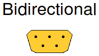
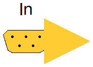
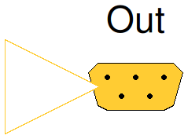

Table of Contents
- User's Guide
- BCs**
- Sensors**
- Assemblies**
- Regions**
- Subregions**
- Connectors
- Characteristics
- Units
- Quantities
- BaseClasses
- **Please check back soon or contact kdavies4 at gmail.com.
Download
- Latest: FCSys-2.0.zip (**Check back soon.)

| Name | Description |
|---|---|
| Icon for a signal bus | |
| In | Icon for a bus input |
| Out | Icon for a bus output |

This icon is designed for a signal bus connector.
partial class Bidirectional "Icon for a signal bus"end Bidirectional;

partial class In "Icon for a bus input" extends FCSys.BaseClasses.Icons.SignalBuses.Bidirectional;end In;

partial class Out "Icon for a bus output" extends FCSys.BaseClasses.Icons.SignalBuses.Bidirectional;end Out;